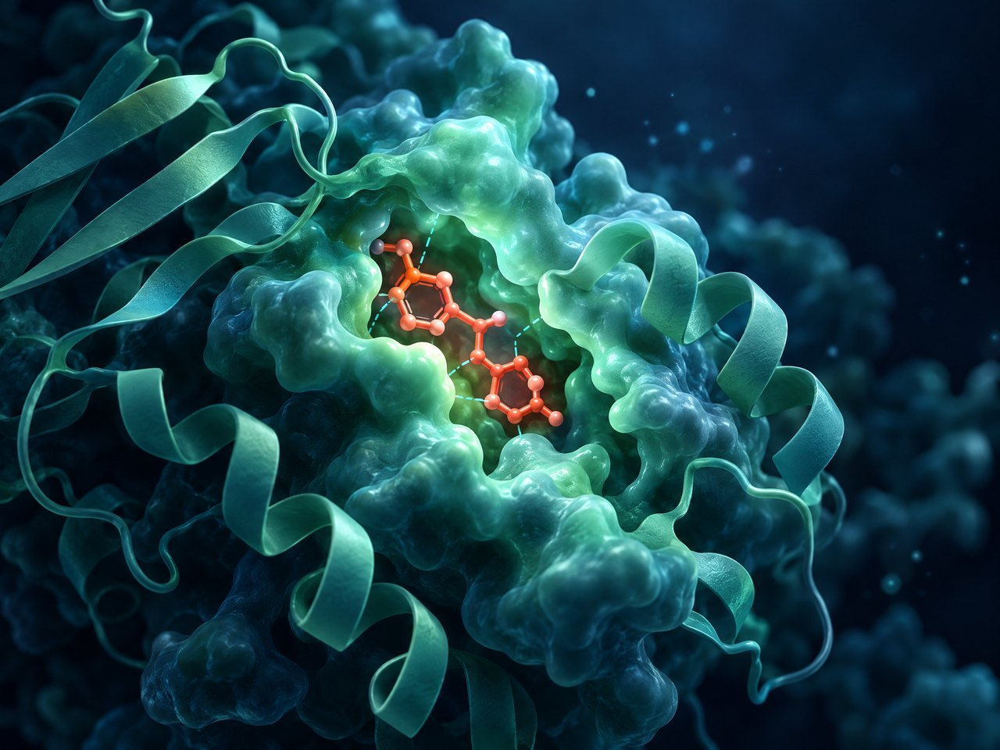

CONCEPTUAL 3D · DOCKING
A♠
A♠
MOLECULAR DOCKING · 01
SARS-CoV-2 main protease
compound docking
Prepared protein and ligand structures, then docked six compounds against the main protease structure 6LU7. The project was presented to Cairo University faculty.
COMPOUNDS6 compoundsCetirizine · N3 · Ebselen · Remdesivir · DMSO · Nitrobenzaldehyde
WORKFLOWDocking & interaction reviewAutoDock Vina · AutoDock · Open Babel · Discovery Studio Visualizer
PDBPubChemDrugBankProtein–ligand
Reported lowest docking score: −6.3 for ebselen and remdesivir. A computational score is not experimental evidence of efficacy.